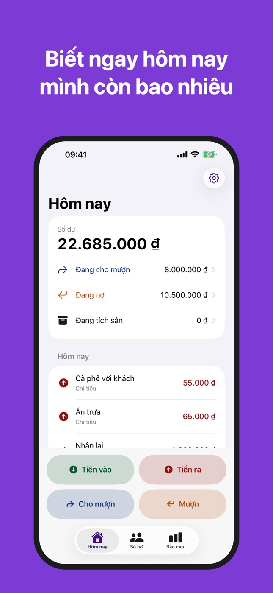
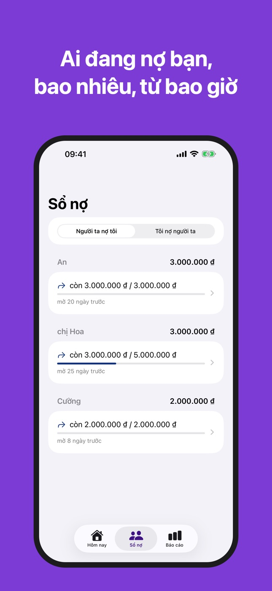
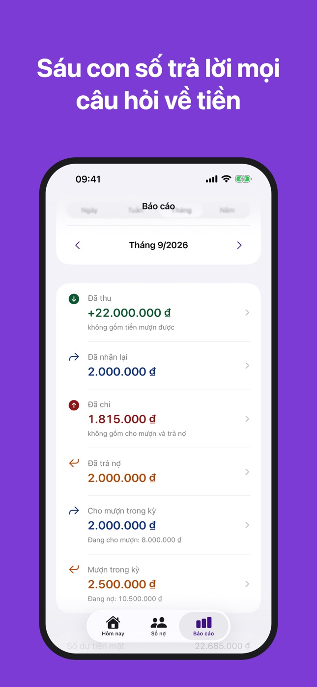

Sổ Tay Tiền: Thu Chi & Nợ
Quản lý thu chi và sổ nợ vay
Ai đang nợ bạn? Bạn đang nợ ai? Sổ Tay Tiền ghi lại từng khoản trong 5 giây. Không tài khoản, không quảng cáo, dữ liệu nằm trên máy bạn.
Ứng dụng cho iPhone · sắp có trên App Store



Bốn nút, không hơn
Tiền vào, Tiền ra, Cho mượn, Mượn — nằm ngay trên màn hình đầu tiên. Gõ số tiền, chạm Lưu.
Sổ nợ hai chiều
"Người ta nợ tôi" và "Tôi nợ người ta": ai, còn bao nhiêu, mở từ bao giờ. Ghi được từng lần trả một phần, trả đủ, hoặc xoá nợ.
Sáu con số
Theo Ngày, Tuần, Tháng hoặc Năm: Đã thu, Đã nhận lại, Đã chi, Đã trả nợ, Cho mượn trong kỳ, Mượn trong kỳ. Chạm vào một con số để xem những giao dịch tạo ra nó.
Cho mượn không phải là tiêu tiền
Tiền cho mượn không bị tính vào chi tiêu, tiền đi mượn không bị tính vào thu nhập. Vì vậy con số "tháng này tôi tiêu bao nhiêu" là con số thật.
Dữ liệu nằm trên máy bạn
Không tài khoản, không quảng cáo, không kết nối internet. Xuất toàn bộ sổ ra CSV hoặc JSON bất cứ lúc nào.
Sáng và tối
Giao diện theo chế độ sáng hoặc tối của iPhone, hoặc chọn riêng trong Thiết lập.